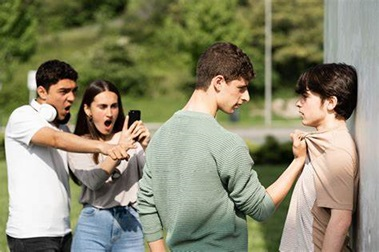
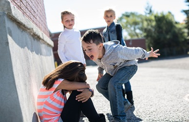
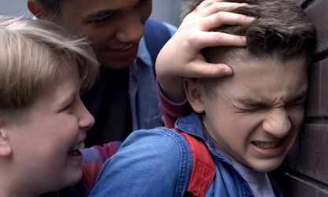

Es el constante maltrato, acoso, humillación e intimación de un estudiante un grupo de estudiantes a uno u otro, a quienes consideran inferiores o diferentes por alguna razón.El maltrato puede ser psicológico,verbal o fisico. Se manifiesta a través de empujones, golpes, mensajes móviles y correos amenazantes en las redes sociales, robos y destrozos del material escolar. Asimismo, con insultos, apodos burlas por algún defecto físico, menosprecio en publico ,difamación, etc.
El término bullying es el más reciente de un conjunto de nombres que se le han dado a lo largo del tiempo al matonaje, acoso, hostigamiento, abuso o maltrato escolar. Es decir, a las diversas formas de maltrato y persecución a las que a menudo se ven sometidos los niños y adolescentes dentro o alrededor de un contexto escolar. La palabra bullying es un préstamo del inglés, proveniente de "bully" (abusador).
Se trata de una forma de violencia que puede pasar desapercibida para los padres y las autoridades, que suelen naturalizarlo como "cosas de chicos" y restarle importancia. Sin embargo, este fenómeno social puede causar enormes daños emocionales y psicológicos en la víctima, además de alentar y normalizar el ejercicio de la violencia en el abusador.
e trata de una forma de violencia que puede pasar desapercibida para los padres y las autoridades, que suelen naturalizarlo como "cosas de chicos" y restarle importancia. Sin embargo, este fenómeno social puede causar enormes daños emocionales y psicológicos en la víctima, además de alentar y normalizar el ejercicio de la violencia en el abusador. El bullying puede ser llevado a cabo por una o más personas, quienes dedican esfuerzos sostenidos al acoso, la burla, la intimidación física y la humillación pública de la víctima. Usualmente crea un clima de linchamiento colectivo y de aislamiento de gran crueldad con las emociones de la víctima. Además, pone en su contra al grupo entero, ya que muchos terceros se suman a la agresión por miedo a convertirse en las próximas víctimas, o por sentirse protegidos y poderosos estando del lado de los abusadores
Este acoso puede darse en persona, a través de redes sociales o de muchas otras formas, dentro y fuera del recinto educativo. Puede consistir en insultos y humillaciones verbales y psicológicas, o también en agresiones físicas y violencia. No hay criterios únicos aplicables respecto a quiénes pueden o no ser víctimas de bullying.
  